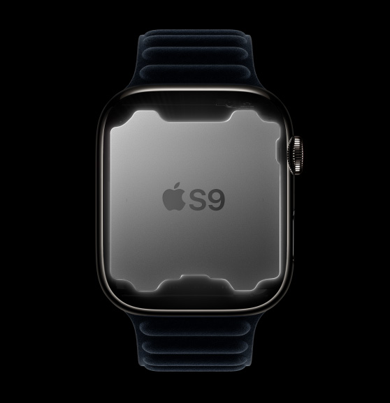
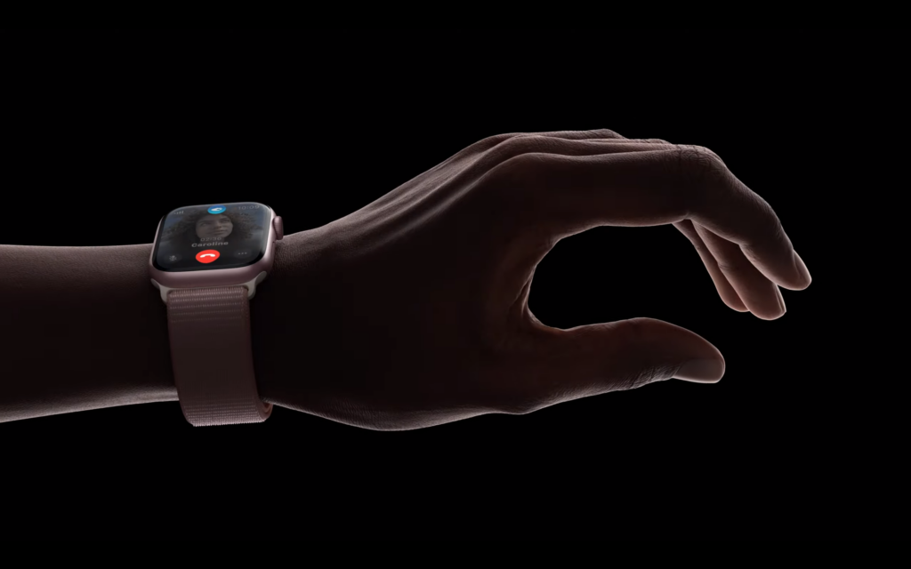

Apple apresenta o novo e avançado Apple Watch Series 9
Publicado em 12 de setembro de 2023

A Apple apresentou o Apple Watch Series 9, trazendo novos recursos para o relógio mais vendido do mundo e atingindo um marco ambiental significativo. O Apple Watch Series 9 está mais poderoso do que nunca, com o novo S9 SiP, que aumenta o desempenho e as possibilidades, uma nova forma mágica de interagir com o Apple Watch, usando um gesto com uma só mão, uma tela mais brilhante, Siri mais rápida e integrada ao aparelho, agora com acesso e registro de dados de saúde, Busca Precisa para iPhone e muito mais. O Apple Watch Series 9 vem com o watchOS 10, que traz apps com um novo design, o novo Conjunto Inteligente, novos mostradores, novos recursos para ciclismo e trilha e ferramentas que contribuem para a saúde mental.
Pela primeira vez, clientes podem escolher uma opção de Apple Watch neutra em carbono, o que representa uma importante conquista rumo ao objetivo da Apple para 2030 de neutralizar as emissões de carbono em toda a cadeia de fornecimento e no ciclo de vida completo dos produtos até 2030.
Novo e poderoso S9 SiP
O Apple Watch Series 9 vem com o S9 SiP, o novo chip exclusivo da Apple. O chip de relógio da Apple mais poderoso até agora traz recursos aprimorados e totalmente novos para todo o sistema, incluindo um novo gesto com dois toques e Siri integrada ao aparelho com a capacidade de acessar e registrar dados de saúde com segurança e privacidade. O Apple Watch Series 9 também tem um novo Neural Engine de 4 núcleos que consegue processar tarefas de aprendizado de máquina até duas vezes mais rápido em comparação ao Apple Watch Series 8. O consumo eficiente de energia do S9 SiP garante ao Apple Watch Series 9 bateria para o dia todo, com 18 horas de duração.
Gesto com dois toques
Inovações como a Digital Crown e o Taptic Engine, além de gestos como tocar, deslizar, levantar o pulso e Cobrir para Silenciar, fazem do Apple Watch um aparelho simples e intuitivo de usar. Com o novo gesto com dois toques, os usuários podem controlar o Apple Watch Series 9 com facilidade, usando apenas uma das mãos e sem tocar na tela. Eles podem tocar duas vezes o indicador com o polegar da mão em que estão usando o relógio para realizar muitas das ações mais comuns no Apple Watch Series 9 de maneira rápida e conveniente. O gesto com dois toques controla o botão principal em um app e pode ser usado para interromper um timer, reproduzir ou pausar música ou adiar um alarme. O gesto também pode ser usado para atender e desligar uma chamada e até tirar fotos com o Controle da Câmera no Apple Watch. O gesto com dois toques também abre o Conjunto Inteligente no mostrador e, ao repetir esse gesto, o usuário percorre os widgets no conjunto.

Siri integrada no aparelho, com capacidade de acessar e registrar dados de saúde
Pela primeira vez no Apple Watch, os pedidos à Siri podem ser processados no aparelho. Para os pedidos que não dependem de informações da internet, como começar um treino ou iniciar um timer, a Siri não utiliza o Wi-Fi ou redes de dados celulares, trazendo respostas mais rápidas e confiáveis. O Neural Engine poderoso deixa o ditado até 25% mais preciso do que no Apple Watch Series 8. O processamento no aparelho é privado e seguro, e agora a Siri pode ser usada para acessar dados do app Saúde para questões relacionadas a saúde e bem-estar. Por exemplo, o usuário pode perguntar quantas horas de sono teve na noite anterior, como está o seu progresso no círculo de Movimento hoje ou qual seu nível de glicose no sangue, se tiver um monitor conectado. Os usuários também podem pedir à Siri no Apple Watch Series 9 para registrar dados de saúde, como peso, menstruação ou medicamentos que foram tomados.